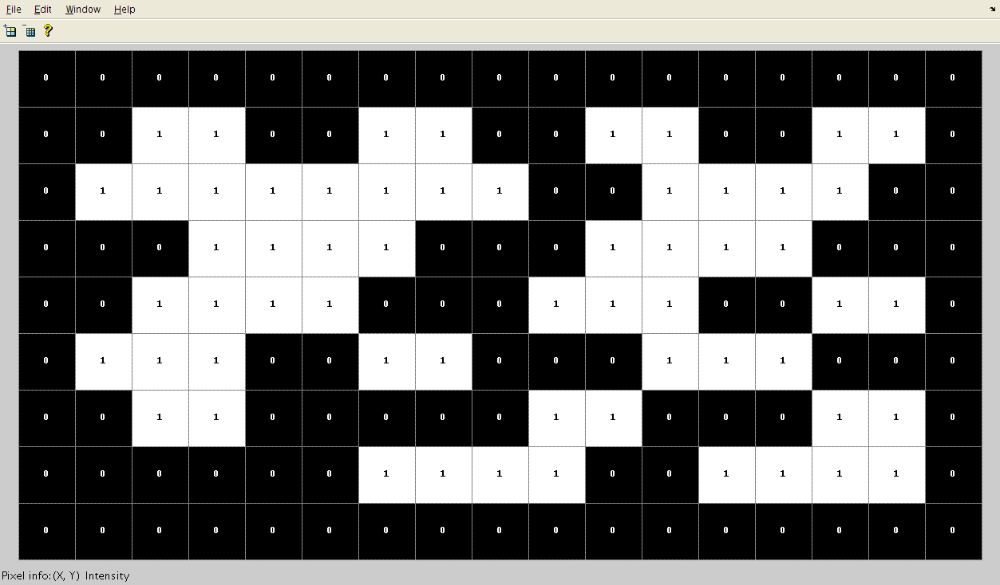

Machine Vision using Union-Find (20%)
In this assignment you will use the Union-Find algorithm to develop a Java program that can:
- Read in an image file
- Count the number of objects in the image
- Locate and highlight objects in the image
- Provide full JUnit test coverage
Image Processing Lab
In this lab you will:
- Read in an image into a Java program
- Output image data (width and height in pixels)
- Binarise an image
- Find objects in an image
Please refer to the image processing slides for example code.
Lab 4 - Union-Find
On competing the lab you will:
- Understand the union find algorithm.
- Develop implementation of the union-find algorithm.
- Create a JUnit test for Union Find algorithms using Eclipse.
- Modify union-find implementation to include path compression.
Image Processing Lab
The following exercises will give you some experience of using some useful abstract data types and techniques for Assignment 1. You can use the Picture and Luminance class. Also, the java.awt.Color class may be useful. You can use any images you wish for this exercise. For Q3, its best to use an image with a white background. You can find a few samples here .
Create a new Eclipse project called Lab5 and include the Picture and Lunimance class (the Picture class is also part of stdlib-package.jar). Attempt the following
-
Picture dimensions. Write a program Dimension.java that takes the name of an image file as a command line input and prints out its dimension (width-by-height).
-
Thresholding. Write a program Threshold.java that reads in a colour image and: converts it to a greyscale picture of 256 grayscale intensities. converts the greyscale image to a black and white image using a threshold value for which pixels are black, and which are white.
-
Bounding box. Write a program BoundingBox.java that reads in an image file and output the smallest bounding box (rectangle parallel to the x and y axes) that contains all of the non-white pixels.
Images in Java
Reading in an image to your program
The Picture class is part of the stdlib-package.jar and can be used to represent most image files (e.g. jpg,bmp) in a Java program. For example, the following code will create a Picture object in your program by reading in a .jpg from the given filename or URL.
Picture p = new Picture("C:\some_folder\my_pic.jpg")
Furthermore, the Luminance class allows us to convert from colour to greyscale. Examples of image processing using these classes can be found here.
Binarising an Image
Translating an image to a binary form can be used to find items in an image. For example, if there is enough contrast in colour between items of interest and background then we can choose a threshold value and change all pixel values greater than threshold to white , otherwise set value to black.

Counting Objects
All components in a binarised image will have the same pixel values - either black or white. By representing each pixel as a ‘site’ or element in a Union-Find data structure, we can track and count the components in an image by connecting pixels that are beside each other and have the same value.

So an approach to use union find would be as follows:
- let n = number of pixels in image
- Create binary version of image
- Create a Union-Find data structure with N sites
- For each pixel p in the image: ... check adjacent pixel q ... if p.value==q.value ...... connect p and q
Submission and Marking Scheme
Submission
Assignment submission must be a zipped Eclipse project via the relevant Moodle assignment link. You must also include the image files you used to test you code. Assignments must be submitted before the deadline. Late submissions will be penalised.
Marking Schema (Tentative)
The table below shows a general marking scheme that will be applied to your submission.
| Feature: | Coding Style and Conformity to spec. | Read in Image | Compute Binary Image | Application of Union-Find to Image | Correct Component Count using Union Find | Coloured Components Image | Highlight Components | Testing and Test Coverage | Advanced Features (e.g. GUI) |
|---|---|---|---|---|---|---|---|---|---|
| Marks: | 5 | 5 | 15 | 15 | 5 | 15 | 10 | 15 | 15 |